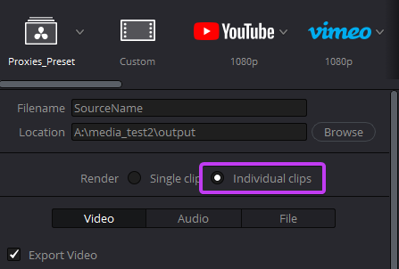

Premiere Proxies
We all know about Premieres particular need for proxies.
They have to be:
-
Same aspect ratio as the original files
Otherwise you end up with stretched proxies, and no one likes that.
-
Same number of audio tracks as the original files
This doesn't make sense, but that's how it is.
-
Ideally same timecode
Because otherwise you're going to have headaches.
So you end up having to:
- Create proxies in Premiere and hope you have a nice 16x9 aspect ratio because that's what the default presets use.
- Realize you have media mixed between DCI 4k and UHD and now you gotta create an individual encoding preset
- Realize you have to create a Media Encoder encoding preset

If you ever had to do that at 2am you know that it works so badly it's not even funny. You create the preset and it tries to copy the files, or it can't import the preset into Premiere, or a thousand other weird things.
Then you decide to do just transcode everything in Davinci Resolve, which is probably what you should've done in the first place, but you still need to render everything in the same aspect ratio.
Let's fix that and hopefully come home early 
The code
Importing pydavinci
Assuming we have pydavinci installed, let's create a premiere_proxies.py file and import and define the variables we're going to use
from pydavinci import Resolve
resolve = Resolve()
project = resolve.project
project_manager = resolve.project_manager
media_pool = resolve.media_pool
media_storage = resolve.media_storage
Setting up a folder to import to
Now let's create a folder on the root folder, and set it as the current folder
ocf_folder = media_pool.add_subfolder('OCF', media_pool.root_folder)
media_pool.set_current_folder(ocf_folder)
Info
OCF means Original Camera Format, and it's a naming standard we all should use!
Defining our function
Let's define our function to generate the Premiere proxies:
def generate_premiere_proxies(input_dir, proxyfactor, output_dir):
input_dir: a path to a folder containing all our mediaoutput_dir: output directory for our proxiesproxyfactor: by how much we will reduce the resolution for the proxies
Info
proxyfactor is the number to divide the original resolution to.
Example:
A proxyfactor of 2 on a 1920x1080 resolution will give you a 960x540 resolution proxy
A proxyfactor of 1 on a 1920x1080 resolution will give you a 1920x1080 resolution proxy.
A proxyfactor of 1.5 on a 1920x1080 resolution will give you a 1280x720 resolution proxy.
Importing Media
Now we can import the media in our project, and figure out what resolutions they are
def generate_premiere_proxies(input_dir, proxyfactor, output_dir):
media_pool.import_media(input_dir)
clips_res = defaultdict(list)
for media in ocf_folder.clips:
clips_res[media.properties['Resolution']].append(media)
We first import our media using the media_pool.import_media method, which imports all valid(as judged by Resolve) media files from input_dir into the media pool. We then create a defaultdict that we will use to store all resolutions from the media.
Then we loop for each MediaPoolItem in the ocf_folder. We access the clips contained in that Folder by using the .clips attribute.
Info
We're using a defaultdict to simplify our loop. If we used a regular dict, the first time we find a resolution we would have to first initiate it with a list value and then append to it. This way we don't need to check if this is the first resolution we've seen or not.
Now let's set our previously created render preset, which basically is just a H264 preset which has some special parameters:
